Steel baton pickup and combat
Actual Chrome browser captures, unchanged Medic art. Preview frames are sampled poses, not exhaustive motion proof. The recording shows real keyboard input and fixed-step combat. Physical-phone performance remains unverified.
Validation report · Authored workflow
Ground pickup
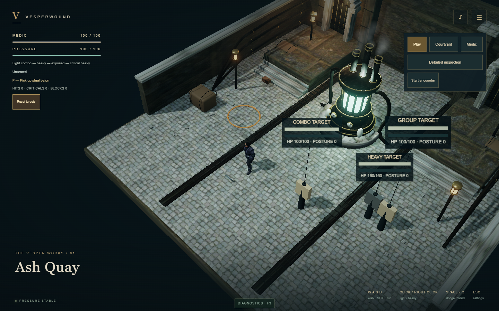
webgpu-requiredwebgl2Fitted right-hand grip
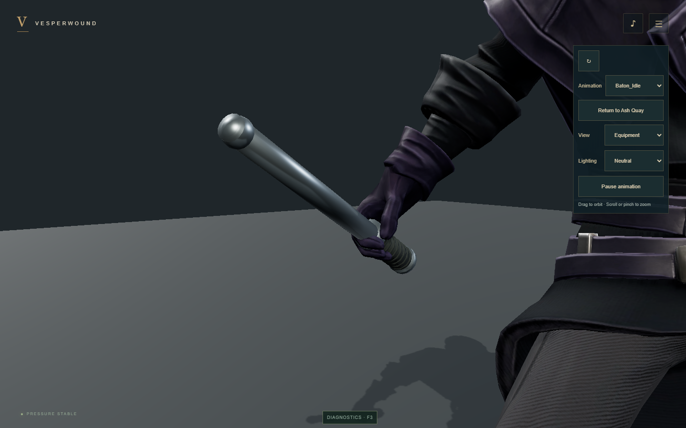
webgpu-requiredwebgl2Armed idle
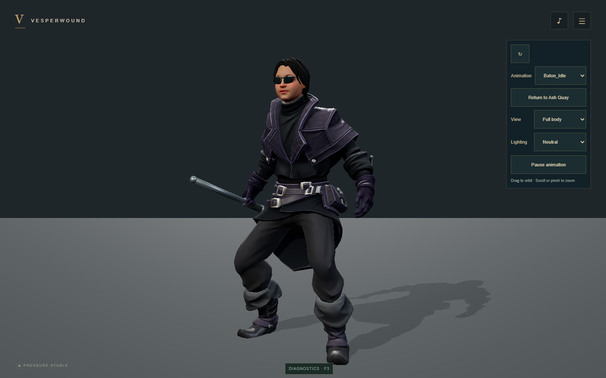
webgpu-required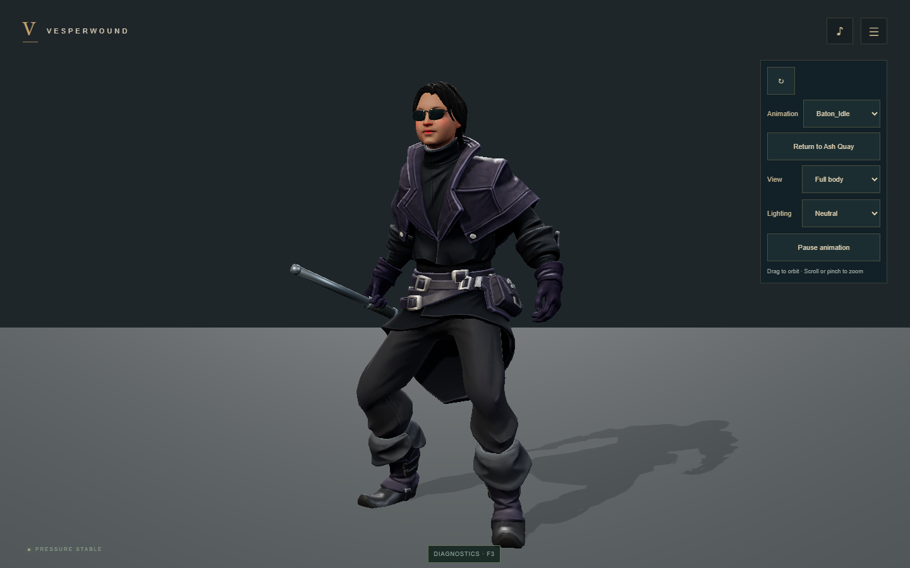
webgl2Forehand
webgpu-requiredwebgl2
Backhand
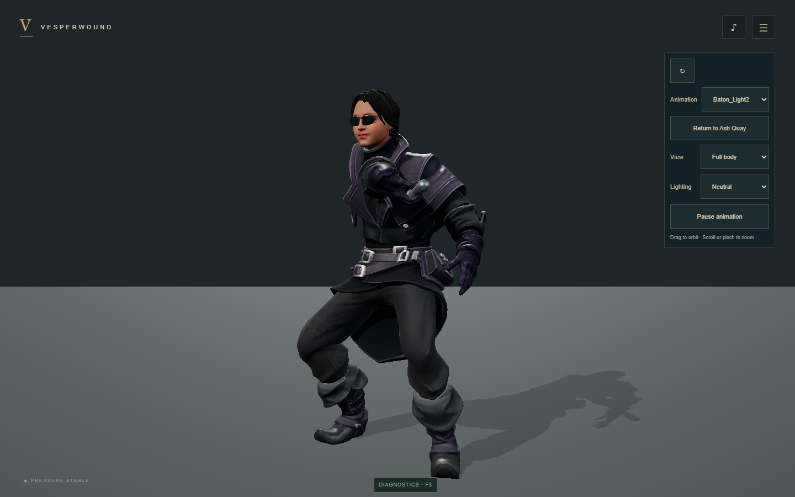
webgpu-requiredwebgl2Finishing swing
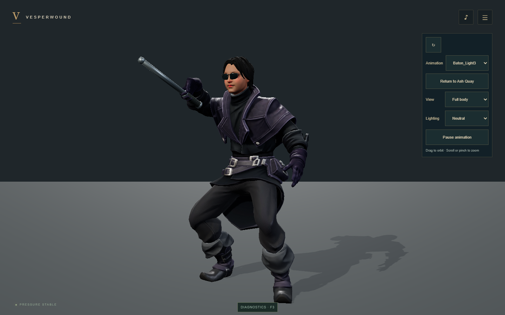
webgpu-requiredwebgl2Overhead heavy
webgpu-required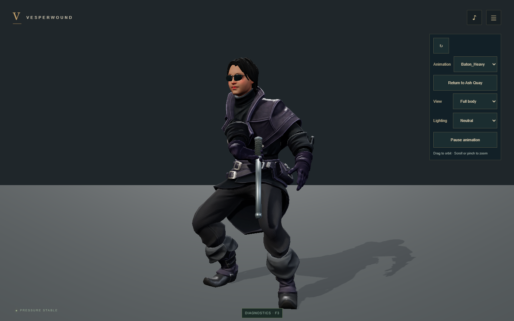
webgl2 Walk
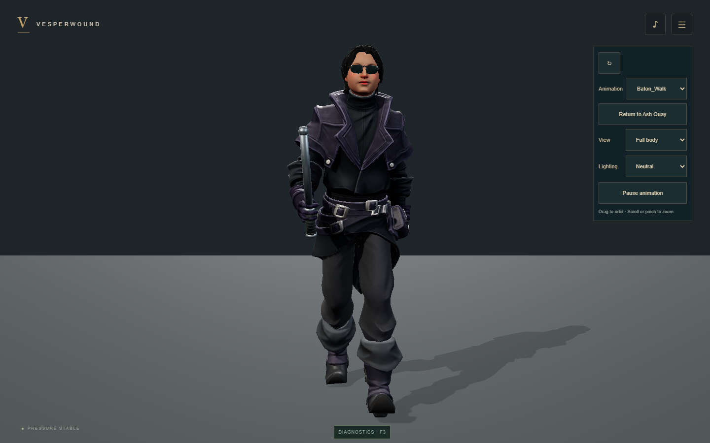
webgpu-requiredwebgl2Run
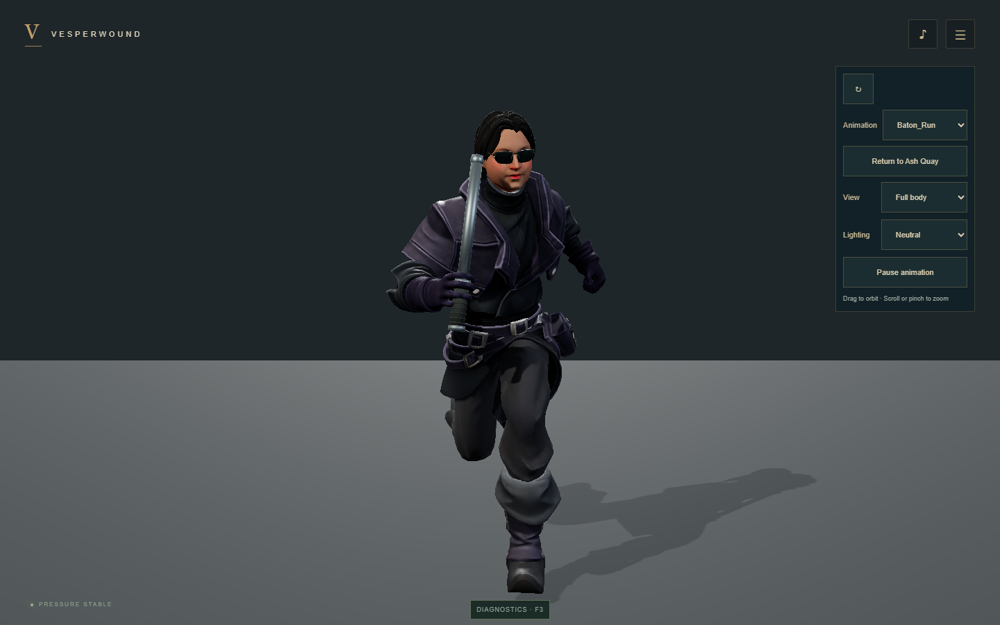
webgpu-required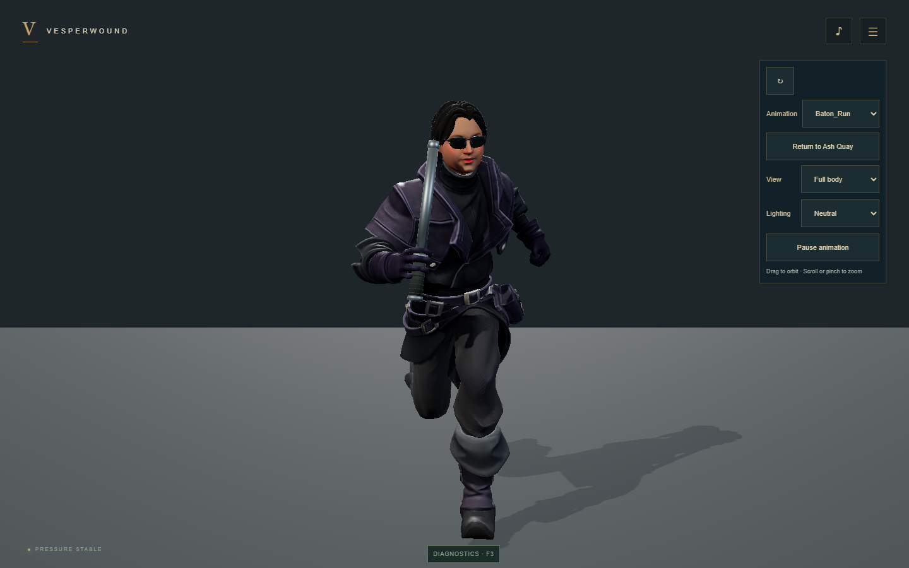
webgl2Dodge
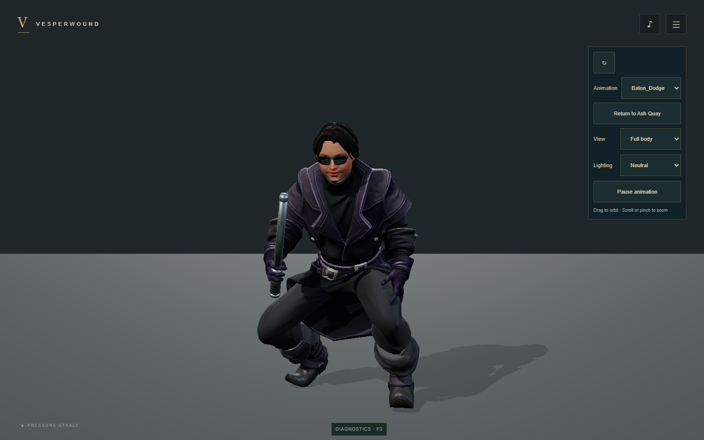
webgpu-requiredwebgl2Ward
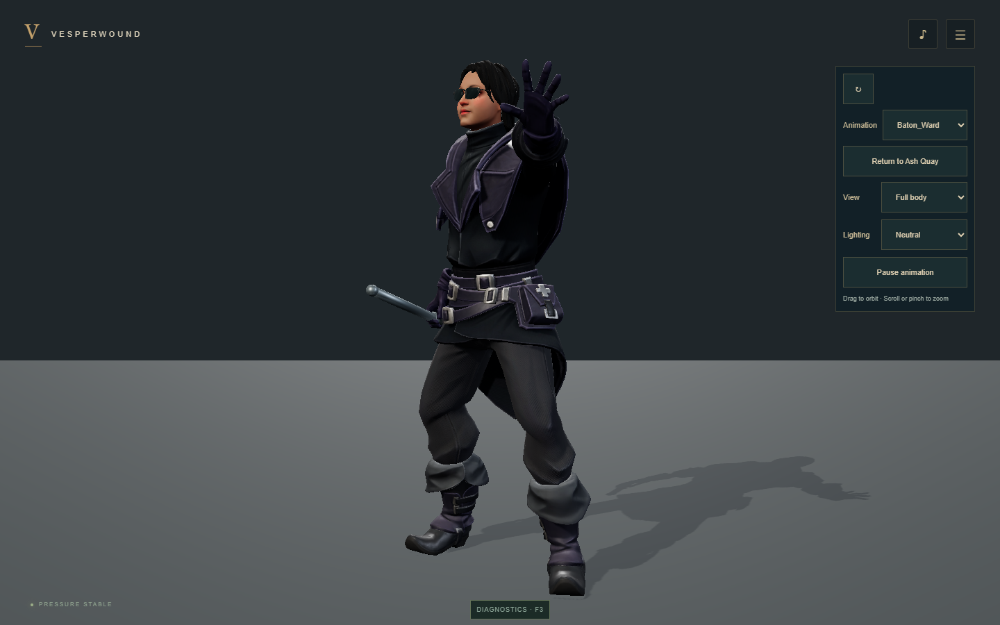
webgpu-requiredwebgl2Hit reaction
webgpu-required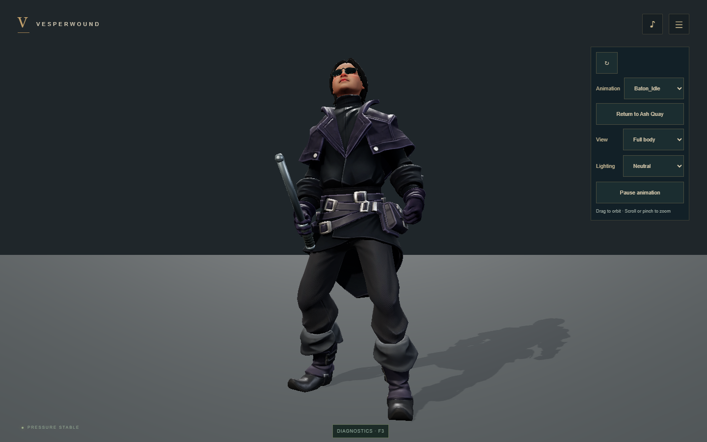
webgl2 Death
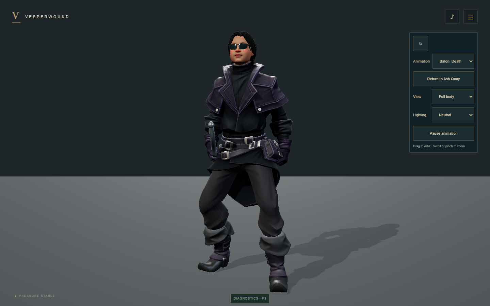
webgpu-requiredwebgl2Mobile landscape · left handed · 140% controls
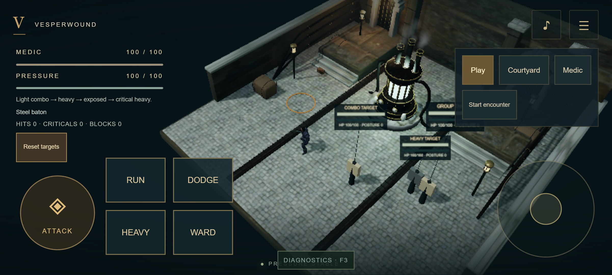